화학분석기사(구) (2016-03-06 기출문제)
1과목: 일반화학
1. 다음 반응에서 1.5몰 Al과 3.0몰 Cl2를 섞어 반응시켰을 때 AlCl3 몇 몰을 생성하는가?
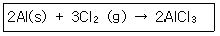
- 2.3몰
- 2.0몰
- 1.5몰
- 1.0몰
(정답률: 83%)

2. 다음 화합물의 이름은?
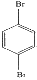
- prtho-dibromohexane
- para-dibromobenzene
- meta-dibromobenzene
- para-dibromohexane
(정답률: 84%)
3. 다음 식들 중 잘못 표현된 것은?
- KW=[H3O+][OH-]
- pH+pOH=pKW
- pH=-log[H3O+]
- Ka=KW×Kb
(정답률: 88%)
4. 지반족 탄화수소에 대한 설명 중 틀린 것은?
- 알케인(alkane)은 불포화탄화수소이다.
- 알켄(alkene)은 불포화탄화수소이다.
- 알카인(alkyne)은 불포화탄화수소이다.
- 알킨(alkyne)은 삼중결합을 갖고 있다.
(정답률: 89%)
5. “액체 속에 들어 있는 기체의 용해도는 용액에 가해지는 기체의 압력에 비례한다.”는 어떤 법칙인가?
- Hess의 법칙
- Raoult의 법칙
- Henry의 법칙
- Nernst의 법칙
(정답률: 81%)
6. 포도당의 분자식은 C6H12O6이다. 각 원소의 질량백분율이 옳게 짝지어진 것은?
- C-40%
- H-12%
- O-46%
- O-64%
(정답률: 89%)
7. 할로젠(halogen) 원소의 원자가전자 수는?
- 1
- 3
- 5
- 7
(정답률: 83%)
8. 다음 표의 (ㄱ), (ㄴ), (ㄷ)에 들어갈 숫자를 순서대로 나열한 것은?
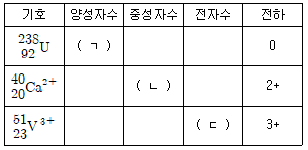
- 238, 20, 20
- 92, 20, 20
- 92, 40, 23
- 238, 40, 23
(정답률: 87%)
9. 물은 비슷한 분자량을 갖는 메탄 분자에 비해 끓는점이 훨씬 높다. 다음 중 이러한 물의 특성과 가장 관련이 깊은 것은?
- 수소결합
- 배위결합
- 공유결합
- 이온결합
(정답률: 89%)
10. 다음의 화학반응식에서 평형 이동에 관한 설명 중 틀린 것은?(오류 신고가 접수된 문제입니다. 반드시 정답과 해설을 확인하시기 바랍니다.)
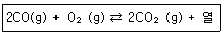
- CO를 첨가할 경우 평형은 오른쪽으로 이동한다.
- O2를 제거할 경우 평형은 왼쪽으로 이동한다.
- 반응계를 냉각할 경우 평형은 오른쪽으로 이동한다.
- 압력을 증가하면 평형은 왼쪽으로 이동한다.
(정답률: 61%)
11. 다음 중 1g의 분자속에 포함된 분자개수가 가장 많은 것은?
- H2O
- NH3
- C2H2
- HCN
(정답률: 70%)
12. S8 분자 6.41g과 같은 개수의 분자를 가지는 P4 분자의 질량은? (단, S원자량은 32.07, P 원자량은 30.97이다.)
- 3.10g
- 3.81g
- 6.19g
- 6.41g
(정답률: 80%)
13. 산, 염기에 대한 설명으로 틀린 것은?
- Brønsted-Lowry산은 양성자 주개(Proton donor)
- 염기는 물에서 수산화 이온을 생성한다.
- 강산(Strong acid)은 물에서 완전히 또는 거의 완전히 이온화되는 산이다.
- Lewis산은 비공유 전자쌍을 줄 수 있는 물질이다.
(정답률: 83%)
14. 이산화탄소에 대한 설명으로 틀린 것은?
- 공기보다 가벼우며 오존층은 파괴하는 물질이다.
- 고체상태의 이산화탄소를 드라이아이스라 부른다.
- 지구온난화에 관련된 온실기체이다.
- 탄소가 연소되면서 다량 발생하며, 화학적으로 안정한 기체이다.
(정답률: 81%)
15. 암모니아의 염기 이온화 상수 Kb값은 1.8×10-5이다. Kb값을 나타내는 화학 반응식은?
- NH4+⇄NH3+H+
- NH3⇄NH2-+H+
- NH4++H2O⇄NH3+H3O+
- NH3+H2O⇄NH4++OH-
(정답률: 82%)
16. 주기율표에 대한 설명 중 틀린 것은?
- 주기율표의 수평 행을 주기(Period)라고 한다.
- 주기율표의 같은 수직 열에 있는 원소들을 같은 족(group)이라고 한다.
- 네 번쨰와 다섯 번째 주기에는 각각 18개의 원소가 있다.
- 여섯 번째 주기에는 28개의 원소가 있다.
(정답률: 79%)
17. Li, Ba, C, F의 원자반지름(pm)이 72, 77, 152, 222 중 각각 어느 한가지씩의 값에 대응한다고 할 때 그 값이 옳게 연결된 것은?
- Ba-72pm
- Li-152pm
- F-77pm
- C-222pm
(정답률: 82%)
18. 탄소와 수소로만 이루어진 탄화수소 중 탄소의 질량 백분율이 85.6%인 화합물의 실험식은?
- CH
- CH2
- CH3
- C2H3
(정답률: 90%)
19. 시트르산(citric acid)은 몇 개의 카복실(carboxyl) 작용기를 갖고 있는가?
- 0개
- 1개
- 2개
- 3개
(정답률: 62%)
20. 다음 원소 중에서 전자 친화도가 가장 큰 원소는?
- Li
- B
- Be
- O
(정답률: 85%)
2과목: 분석화학
21. 중크롬산 적정에 대한 설명으로 틀린 것은?
- 중크롬산 이온이 분석에 응용될 때 초록색의 크롬(Ⅲ)이온으로 환원된다.
- 중크롬산 적정은 일반적으로 염기성 용액에서 이루어진다.
- 중크롬산칼륨 용액은 안정하다.
- 시약급 중크롬산칼륨은 순수하여 표준용액을 만들 수 있다.
(정답률: 58%)
22. 0.020M Na2SO4과 0.010M KBr 용액의 이온세기(Ionic Strength)는 얼마인가?
- 0.010
- 0.030
- 0.060
- 0.070
(정답률: 75%)
23. 약산을 강염기로 적정할 때 일어나는 현상에 대한 설명으로 틀린 것은?
- 높은 농도의 약산 적정 시에 당량점 근처에서 pH 변화폭이 크다.
- 약산을 강염기로 적정할 때 당량점에서 pH는 7보다 크다.
- 약산의 해리상수가 클 경우 당량점 근처에서 pH 변화 폭이 크다.
- 약산의 해리상수가 작을 경우 반응완결도가 높다.
(정답률: 64%)
24. 다음은 Potassium tartrate의 용해도가 첨가물의 농도에 따라 어떻게 변화되는가를 나타내는 그림이다. 그림의 (a), (b), (c)는 각각 어떤 첨가물로 예상할 수 있는가? (단, 첨가물은 NaCl, Glucose, KCl이다.)
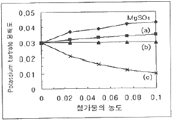
- (a) NaCl, (b) Glucose (c) KCl
- (a) NaCl, (b) KCl (c) Glucose
- (a) KCl, (b) NaCl (c) Glucose
- (a) Glucose, (b) KCl (c) NaCl
(정답률: 83%)
25. Pb2+ 와 EDTA 와의 형성상수(formation constamt)가 1.0×1018이다. pH 10에서 EDTA 중 Y4-의 분율이 0.3일 때 pH 10에서 조건부(conditional) 형성상수는 얼마인가? (단, 육양성자 형태의 EDTA를 H6Y2+으로 표현할 때, Y4-는 EDTA에서 수소가 완전히 해리된 상태이다.)
- 3.0×1017
- 3.3×1013
- 3.0×10-19
- 3.3×10-18
(정답률: 56%)
26. 산-염기 적정 지시약에 대한 설명으로 틀린 것은?(오류 신고가 접수된 문제입니다. 반드시 정답과 해설을 확인하시기 바랍니다.)
- 티몰 블루는 pH 0.7에서 붉은색이고 pH 2.7에서 노란색이다.
- 지시약이란 서로 다른 색깔을 띠는 여러 가지 양성자성 화학종의 산 혹은 염기이다.
- 지시약의 변색 범위는 pH=pK±1
- 지시약은 그 색깔 변화가 당량점에서의 이론적 pH보다 약 1.0정도 높거나 낮은 것을 선택하는 것이 바람직하다.
(정답률: 59%)
27. 산/염기 적정에 관한 설명으로 옳은 것은?
- 약산의 해리상수 Ka의 양의 대수인 pKa는 양의 값을 가지며, pKa가 큰 값일수록 강산이다.
- 유기산의 pKa가 큰 값일수록 해리분율이 크다.
- 약산을 강염기로 적정 시에 당량점의 pH는 7.00이며, 종말점의 pH는 7보다 큰 값으로 산성을 나타낸다.
- 이양성자산(Ka1, Ka2)을 강염기로 적정할 때 적당한 Ka1/Ka2값인 경우 2개의 당량점을 관찰할 수 있다.
(정답률: 67%)
28. A+B⇄C+D 반응의 평형상수는 1.0×103이다. 반응물과 생성물의 농도가 [A]=0.010M, [B]=0.10M, [C]=1.0M, [D]=10.0M로 변했다면 평형에 도달하기 위해서는 반응은 어느 방향으로 진행되겠는가?
- 왼쪽으로 반응이 진행된다.
- 오른쪽으로 반응이 진행된다.
- 이미 평형에 도달했으므로 정지 상태가 된다.
- 온도를 올려 주면 오른쪽으로 반응이 진행된다.
(정답률: 73%)
29. 반쪽 반응 aA+ne-⇄bB에 대해 반쪽전지전위 E를 나타내는 Nernst식을 바르게 표현한 것은?
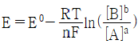
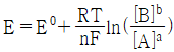
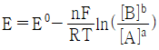
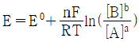
(정답률: 60%)
30. 산화ㆍ환원 적정에서 사용되는 KMnO4에 대한 설명으로 틀린 것은?
- 진한 자주색을 띤 산화제이다.
- 매우 안정하여 일차표준물질로 사용된다.
- 강한 산성용액에서 무색의 Mn2+로 환원된다.
- 산성용액에서 자체지시약으로 작용한다.
(정답률: 78%)
31. 시료에 들어있는 철(Fe)을 정량하기 위하여 침전법에 의한 무게 분석을 수행하였다. 분석시료는 0.50g이며 이 시료를 사용하여 제조한 Fe3+용액으로부터 얻어진 Fe(OH)3의 침전을 연소시켜 Fe2O3 의 재로 변화시켰다. 얻어진 Fe2O3의 무게가 0.150g이라면 시료에 들어있는 철의 함량(w/w)은 얼마가 되겠는가? (단, 철과 산소의 원자량은 각각 55.85와 16이다.)
- 11%
- 21%
- 31%
- 41%
(정답률: 56%)
32. 우리가 흔히 먹는 식초는 아세트산(acetic acid, CH3COOH)을 4~8%정도 함유하고 있다. 다음 완충 용액의 pH 값은 얼마인가? (단, CH3COOH의 Ka=1.8×10-5, pKa=4.74, 완충 용액은 0.50M CH3COOH/0.25M CH3COONa이다.)
- 4.04
- 4.44
- 4.74
- 5.04
(정답률: 61%)
33. 약산(HA)과 이의 나트륨 염(NaA)으로 이루어진 완충용액에 대한 설명으로 틀린 것은?
- 완충용액의 pH는 약산의 해리상수인 pKa값에 의하여 결정된다.
- 완충용액의 pH는 용액의 부피에 무관하며 희석하여도 pH 변화가 거의 없다.
- 완충용액의 완충용량은 약산(HA)과 나트륨염(NaA)의 농도에 무관하다.
- 완충용액의 완충용량은
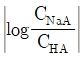
값이 작을수록 크다.
(정답률: 70%)
34. 과산화수소 수용액 25.0mL를 증류수로 희석하여 500mL로 만들었다. 희석 용액 25.0mL를 취해 200mL 증류수와 3.0M H2SO4 20.0mL와 섞은 후 0.020M KMnO4로 적정하였을 때 당량점은 25.0mL이었다. 과산화수소의 몰 농도는 얼마인가?
- 0.020M
- 0.⑤0M
- 0.50M
- 1.0M
(정답률: 27%)
35. 표준전극전위(E0)에 대한 다음 설명 중 틀린 것은?
- 반쪽반응의 표준전극전위는 온도의 영향을 받는다.
- 표준전극전위는 균형 맞춘 반쪽반응의 반응물과 생성물의 몰수와 관계가 있다.
- 반쪽반응의 표준전극전위는 전적으로 환원반응의 경우로만 나타난다.
- 표준전극전위는 산화전극 전위를 임의로 0.000V로 정한 표준수소전극인 화학전지의 전위라는 면에서 상대적인 양이다.
(정답률: 57%)
36. 다음의 두 평형에서 전하균형식(charge balance equation)을 옳게 표현한 것은?
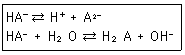
- [H+]=[HA-]+[A2-]+[OH-]
- [H+]=[HA-]+2[A2-]+[OH-]
- [H+]=[HA-]+4[A2-]+[OH-]
- [H+]=2[HA-]+[A2-]+[OH-]
(정답률: 76%)
37. Cd(s)+Ag+⇄Cd2++2Ag(s)의 화학반응에서 반쪽반응식과 그에 따른 표준환원전위 E0가 다음과 같을 때 상대적으로 산화력이 큰 산화제(Oxidzing agent)에 해당하는 것은?
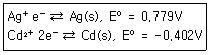
- Cd(s)
- Ag+
- Cd2+
- Ag(s)
(정답률: 81%)
38. 어떤 삼양성자산(tripotic acid)이 수용액에서 다음과 같은 평형을 가질 때 pH9.0에서 가장 많이 존재하는 화학종은?
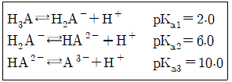
- H3A
- H2A-
- HA2-
- A3-
(정답률: 67%)
39. 부피법에 의한 적정분석에 대한 설명으로 틀린 것은?
- 표준 용액 또는 표준 적정시약은 알려진 농도를 갖고 있는 시약으로서 부피 분석을 수행하는데 사용된다.
- 종말점이란 적정에 있어 분석물의 양과 정확히 일치하는 양의 표준 시약이 가해진 지점이다.
- 역적정은 분석불과 표준시약 사이의 반응속도가 느리거나 표준시약이 불안정할 때 자주 사용한다.
- 부피분석은 화학조성과 순도가 정확하게 알려진 일차 표준물질에 근거한다.
(정답률: 69%)
40. 난용성 염 포화용액 성분이 My+와 Ax-를 포함하는 용액에서 두 이온의 농도 곱을 용해도곱(용해도적, solubility product; Ksp)이라고 한다. 이 값은 온도가 일정하면 항상 일정한 값을 갖는다. 이 때 [My+]x와 [Ax-]y의 곱이 Ksp보다 클 때 용액에서 나타나는 현상은?
- 농도곱이 Ksp와 같아질 때까지 침전한다.
- 농도곱이 Ksp와 같아질 때까지 용해된다.
- Ksp와 무관하게 항상 용해되어 침전하지 않는다.
- 주어진 용액의 상태는 포화이므로 침전하지 않는다.
(정답률: 76%)
3과목: 기기분석I
41. 전자기 복사파의 양자역학적인 성질은?
- 회절
- 산란
- 반사
- 흡수
(정답률: 45%)
42. 수은은 실온에서 증기압을 갖는 유일한 금속원소이다. 다음 원자화 방법 중 수은정량 응용 가능한 것은?
- 전열 원자화
- 찬 증기 원자화
- 글로우 방전 원자화
- 수소화물 생성 원자화
(정답률: 75%)
43. 나트륨(Na) 기체의 전형적인 원자 흡수 스펙트럼을 옳게 나타낸 것은?
- 선(line) 스펙트럼
- 띠(bone) 스펙트럼
- 선과 띠의 혼합 스펙트럼
- 연속(continuous) 스펙트럼
(정답률: 77%)
44. Raylegh 산란에 대하여 가장 바르게 나타낸 것은?
- 콜로이드 입자에 의한 산란
- 굴절률이 다른 두 매질 사이의 반사 현상
- 산란복사선의 일부가 양자화 된 진동수만큼 변화를 받을 때의 산란
- 복사선의 파장보다 대단히 작은 분자들에 의한 산란
(정답률: 60%)
45. Fouier 변화 적외선 흡수 분광기의 장점이 아닌 것은?
- 신호/잡음비 개선
- 일정한 스펙트럼
- 빠른 분석속도
- 바탕보정 불필요
(정답률: 76%)
46. 형광의 방출에 대한 설명으로 틀린 것은?
- π*→π 전이에서 형광이 잘 나타난다.
- σ*→σ전이에 해당하는 형광은 거의 나타나지 않는다.
- C6H5I 가 C6H5CH3보다 형광의 상대적 세기가 강하다.
- 산성 고리 치환체를 갖는 방향족 화합물의 형광은 pH의 영향을 받는다.
(정답률: 59%)
47. 물(H2O) 분자의 진동(Vibration) 방식(mode)과 적외선 흡수 스펙트럼에 대한 설명으로 옳은 것은?
- 진동 방식은 3가지이고 적외선 스펙트럼의 흡수대는 2개가 나타난다.
- 진동 방식은 3가지이고 적외선 스펙트럼의 흡수대는 3개가 나타난다.
- 진동 방식은 4가지이고 적외선 스펙트럼의 흡수대는 3개가 나타난다.
- 진동 방식은 4가지이고 적외선 스펙트럼의 흡수대는 4개가 나타난다.
(정답률: 65%)
48. 분자흡수분광법의 가시광선 영역에서 주로 사용되는 복사선의 광원은?
- 중수소등
- 니크롬선등
- 속빈 음극등
- 텅스텐 필라멘트등
(정답률: 67%)
49. 어떤 회절발의 분리능은 5000이다. 이 회절발로 분리할 수 있는 1000cm-1에 가장 인접한 선의 파수의 차이는 얼마인가?
- 0.1cm-1
- 0.2cm-1
- 0.5cm-1
- 5.0cm-1
(정답률: 69%)
50. 플라즈마 방출 분광법에서 플라즈마 속에 고체와 액체를 도입하는 방법인 전열 증기화에 대한 설명으로 틀린 것은?
- 전열 원자화와 비슷하게 시료를 전기로에서 증기화 한다.
- 증기는 아르곤 흐름에 의해 플라즈마 토치속으로 운반된다.
- 전기로는 시료 도입은 물론 시료 원자화를 위해 주로 사용한다.
- 관측되는 신호는 전열 원자흡수법에서 얻는 것과 유사한 순간적인(transient) 봉우리이다.
(정답률: 59%)
51. 고분해능 NMR을 이용한
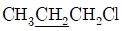
의 스펙트럼에서 밑줄 친 -CH2기의 이론상 갈라지는 흡수봉우리(다중선)의 수는?- 4
- 6
- 12
- 24
(정답률: 70%)
52. 13C NMR 스펙트럼은 1H NMR보다 일반적으로 약 몇 배의 ppm 차이를 두고 봉우리가 나타나는가?
- 5배
- 20배
- 50배
- 200배
(정답률: 48%)
53. 플라즈마 광원의 방출분광법에는 3가지 형태의 높은 온도 플라즈마가 있다. 그 종류가 아닌 것은?
- 흑연전기로(GFA)
- 유도쌍 플라즈마(ICP)
- 직류 플라즈마(DCP)
- 마이크로파 유도 플라즈마(MIP)
(정답률: 79%)
54. CH3CH2CH3에서 서로 다른 환경을 가진 소수는 몇 가지인가?
- 1
- 2
- 3
- 같은 환경을 가진 소수가 없다.
(정답률: 66%)
55. X-선 형광법의 장점이 아닌 것은?
- 비파괴 분석법이다.
- 스펙트럼이 비교적 단순하다.
- 가벼운 원소에 대하여 감도가 우수하다.
- 수 분 내에 다중 원소의 분석이 가능하다.
(정답률: 77%)
56. 복사선 에너지를 전기신호로 변환시키는 변환기와 관련이 가장 적은 것은?
- 섬광 계수기
- 속빈 음극등
- 반도체 변환기
- 기체-충전 변환기
(정답률: 76%)
57. 아스피린을 펠렛법으로 적외선 흡수 스펙트럼을 측정하기 위해서 필요한 물질은?
- KBr
- Na2CO3
- NaHCO3
- NaOH
(정답률: 62%)
58. 전도성 고체를 원자분광기에 도입하여 사용하기에 가장 적합한 방법은?
- 전열 증기화
- 레이저 증발법
- 초음파 분무법
- 스파크 증발법
(정답률: 55%)
59. 다음에서 설명하고 있는 장치는?
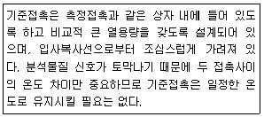
- 열전기쌍
- 전자증배관
- Faraday 컵
- 단일채널 검출기
(정답률: 63%)
60. Bragg 식에 의하면 X-선이 시료에 입사되면 입사각과 시료의 내부 결정구조에 따라 회절현상이 발생한다. 파장이 1.315Å 인 X-선을 사용하여 구리 시료로부터 1차 Bragg 회절 peak를 측정한 2θ는 50.5도이다. 구리금속 내부의 회절면 사이의 거리는 얼마인가?
- 0.771Å
- 0.852Å
- 1.541Å
- 3.082Å
(정답률: 57%)
4과목: 기기분석II
61. 1차 이온화 과정에서 생성된 이온들 중에서 한 분자 이온들 중에서 한 분자 이온을 선택한 후 2차 이온화시킴으로써 화학구조 분석, 화학반응 연구, 대사체 규명 등에 가장 유용하게 활용되는 연결(hyphenated) 질량분석법은?
- GC/MS
- ICP/MS
- LC/MS
- MS/MS
(정답률: 61%)
62. 질량 이동(mass transfer) 메카니즘 중 전지 내의 벌크용액에서 질량이동이 일어나는 주된 과정으로서 정전기장 영향 아래에서 이온이 이동하는 과정을 무엇이라고 하는가?
- 확산(diffusion)
- 대류(convection)
- 전도(conduction)
- 전기 이동(migration)
(정답률: 65%)
63. 질량분석계로 분석할 경우 상대 세기(abundance)가 거의 비슷한 2개의 동위원소를 갖는 할로겐 원소는?
- Cl(chlorine)
- Br(bromine)
- F(fluorine)
- I(iodine)
(정답률: 77%)
64. 기체 또는 액체 크로마토그래피에 응용되는 직접적인 물리적 현상으로 가장 거리가 먼 것은?
- 흡착
- 이온교환
- 분배
- 끓는점
(정답률: 70%)
65. 다음의 특징을 가지는 질량분석기는?
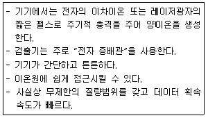
- sector 질량분석기
- 사중극자 질량분석기
- 이중초점 질량분석기
- Time-of-Flight 질량분석기
(정답률: 63%)
66. 전위차법의 일반적 원리에 대한 설명으로 틀린 것은?
- 기준전극은 측정하려는 분석물의 농도와 무관하게 일정 값의 전극전위를 가진다.
- 지시전극은 분석물의 활동도에 따라 전극전이가 변한다.
- 일반적으로 수소전극을 기준전극으로 사용한다.
- 염화포타슘은 염다리를 위한 이상적인 전해물이다.
(정답률: 54%)
67. 다음 반쪽전지의 전극전위는 얼마인가?
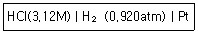
- 0.0303V
- 0.0313V
- 0.333V
- -0.0314V
(정답률: 24%)
68. 적하 수은 전극(dropping mercury electrode)을 사용하는 폴라로그래피(polarograph)에 대한 설명으로 옳지 않은 것은?
- 확산전류(diffusion current)는 농도에 비례한다.
- 수은이 항상 새로운 표면을 만들어 내는 재현성이 크다.
- 수은의 특성상 환원 반응보다 산화 반응의 연구에 유용하다.
- 반파 전위(half-wave potential)로부터 정성적 정보를 얻을 수 있다.
(정답률: 78%)
69. 기체크로마토그래피-질량검출기(GC-MS)로 음료수에 함유된 카페인(m/z194)의 양을 측정하기 위하여, 내부표준물질로 caffeine-D3(m/z197)를 넣고, 머무름시간이 거의 비슷한 두 이온 피크의 면적을 측정하고자 한다. 분석물질 caffeine의 내부표준물질 caffeine-D3에 대한 검출감도 F는 1.04이었다. 음료수 1.000mL에 1.11g/L농도의 caffeine-D3표준용액을 0.⑤0mL 가하여 화학처리를 한 다음 GC-MS로 분석한 결과, caffeine과 caffeine-D3의 피크 면적이 각각 1,733과 1,144이었다. 이음료수에 포함된 caffeine의 농도(mg/L)는?
- 81mg/L
- 77mg/L
- 53mg/L
- 38mg/L
(정답률: 30%)
70. 표준수소전극으로 -0.121V로 측정된 전위는 포화 칼로멜 기준전극(E=0.241V)으로 측정한다면 얼마의 전위로 측정되겠는가? (단, 기준전극은 모두 산화전극으로 사용되었다.)
- -0.362V
- -0.021V
- 0.121V
- 0.362V
(정답률: 57%)
71. 이상적인 기준전극이 가지는 성질로 틀린 것은?
- 비가역적이고 Nernst식에 따라야 한다.
- 온도가 주기적으로 변해도 과민반응을 나타내지 않아야 한다.
- 시간이 지나도 일정 전위를 유지해야 한다.
- 작은 전류 후에도 원래전위로 되돌아와야 한다.
(정답률: 79%)
72. 열분석은 물질의 특이한 물리적 성질을 온도의 함수로 측정하는 기술이다. 열분석 종류와 측정방법을 연결한 것 중 잘못된 것은?
- 시차주사열량법(DSC)-열과 전이 및 반응온도
- 시차열분석(DTA)-전이와 반응온도
- 열무게(TGA)-크기와 점도의 변화
- 방출기체분석(EGA)-열적으로 유도된 기체생성물의 양
(정답률: 79%)
73. 물질 A와 B를 분리하기 위해 10cm 관을 사용하였다. A와 B의 머무름 시간은 각각 5분과 11분이고 이동상의 평균이동속도는 5cm/분 이었다. A와 B의 밑변의 봉우리 나비가 1분과 1.1분일 때 이관의 분리능은 얼마인가?
- 3.25
- 5.71
- 7.27
- 9.82
(정답률: 64%)
74. 시차 열법분석으로 벤조산 시료 측정 시 대기압에서 측정할 때와 200psi에서 측정할 때 봉우리가 일치하지 않은 이유를 가장 잘 설명한 것은?
- 높은 압력에서 시료가 파괴되었기 때문이다.
- 높은 압력에서 밀도의 차이가 생겼기 때문이다.
- 높은 압력에서 끓는점이 영향을 받았기 때문이다.
- 모세관법으로 측정하지 않았기 때문이다.
(정답률: 75%)
75. 다음 기체크로마토그래피의 검출기 중 비파괴 검출기는?
- 열이온검출기(TID)
- 원자방출검출기(AED)
- 열전도도검출기(TCD)
- 불꽃이온화검출기(FID)
(정답률: 61%)
76. 기체 크로마토그래피(GC)의 이동상 기체로 일반적으로 사용되지 않는 것은?
- 질소
- 헬륨
- 수소
- 산소
(정답률: 76%)
77. 다음 중 분리분석법이 아닌 것은?
- 크로마토그래피
- 추출법
- 증류법
- 폴라로그래피
(정답률: 79%)
78. 질량분석법의 특징에 대한 설명으로 틀린 것은?
- 시료의 원소 조성에 관한 정보
- 시료 분자의 구조에 대한 정보
- 시료의 열적 안정성에 관한 정보
- 시료에 존재하는 동위원소의 존재비에 대한 정보
(정답률: 77%)
79. 고성능 액체 크로마토그래피에 사용되는 검출기의 이상적인 특성이 아닌 것은?
- 짧은 시간에 감응해야 한다.
- 용리 띠가 빠르고 넓게 퍼져야 한다.
- 분석물질의 낮은 농도에도 감도가 높아야 한다.
- 넓은 범위에서 선형적인 감응을 나타내어야 한다.
(정답률: 64%)
80. Van Deemter 도시로부터 얻을 수 있는 가장 유용한 정보는?
- 이동상의 적절한 유속(flow rate)
- 정지상의 적절한 온도(temperature)
- 분석물질의 머무름 시간(retention time)
- 선택 계수([α], selectivity coefficiient)
(정답률: 78%)
2Al + 3Cl2 → 2AlCl3
따라서 1.5몰의 알루미늄과 3.0몰의 염소가 반응하면 2:3 비율로 반응하여 1.5몰의 알루미늄이 모두 소진되고 2.25몰의 염소가 소진됩니다. 이때 생성되는 알루미늄 염화물의 몰 수는 1.5몰이 됩니다. 따라서 정답은 "1.5몰"입니다.